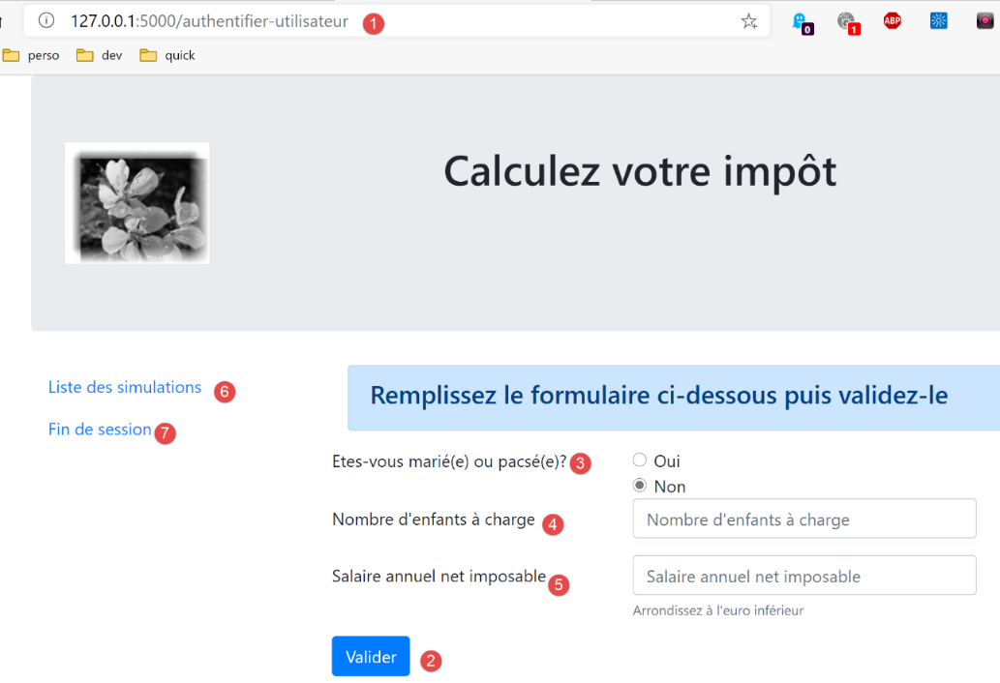
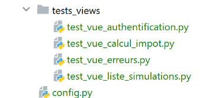
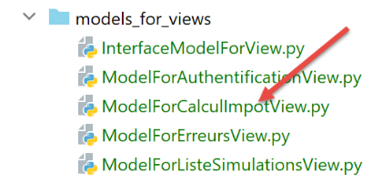
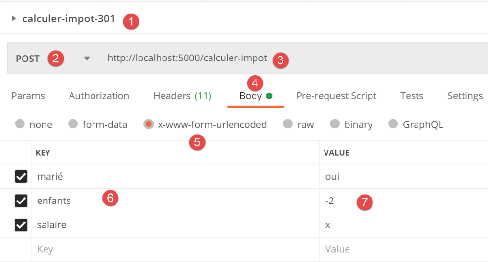
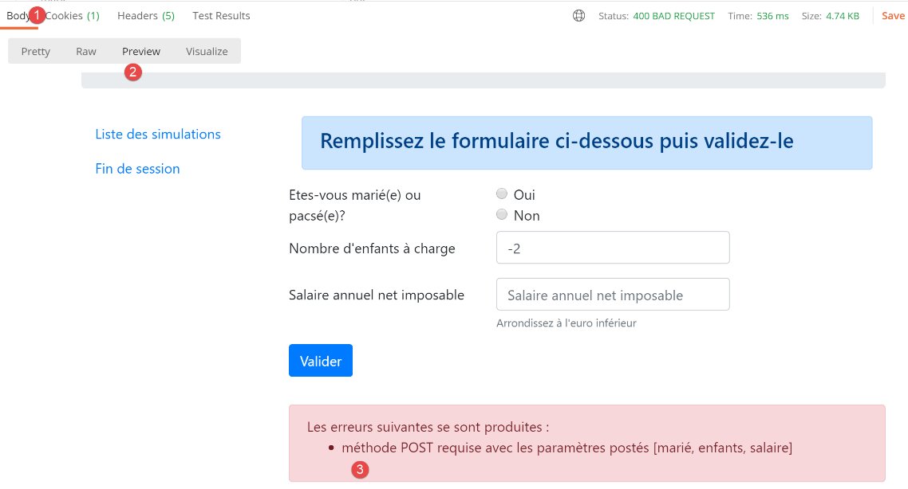
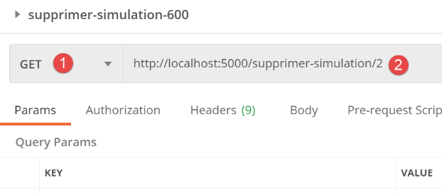
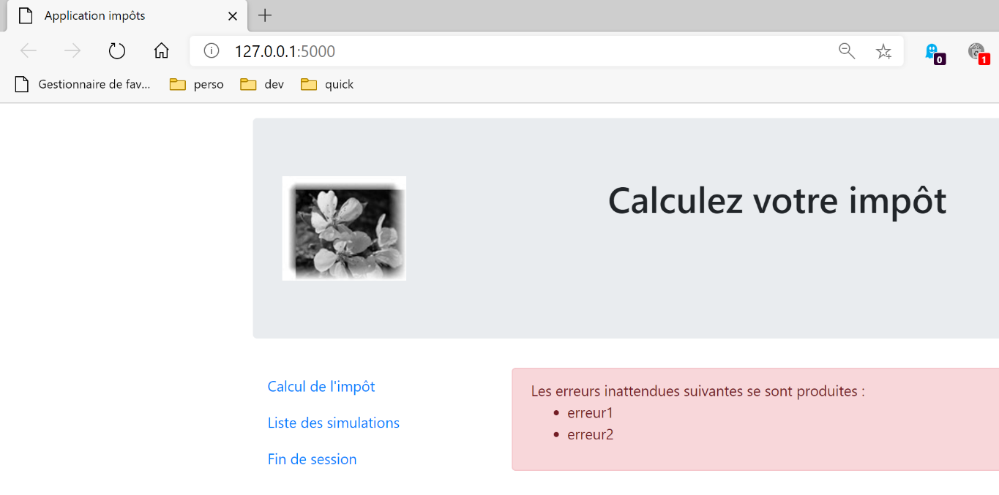
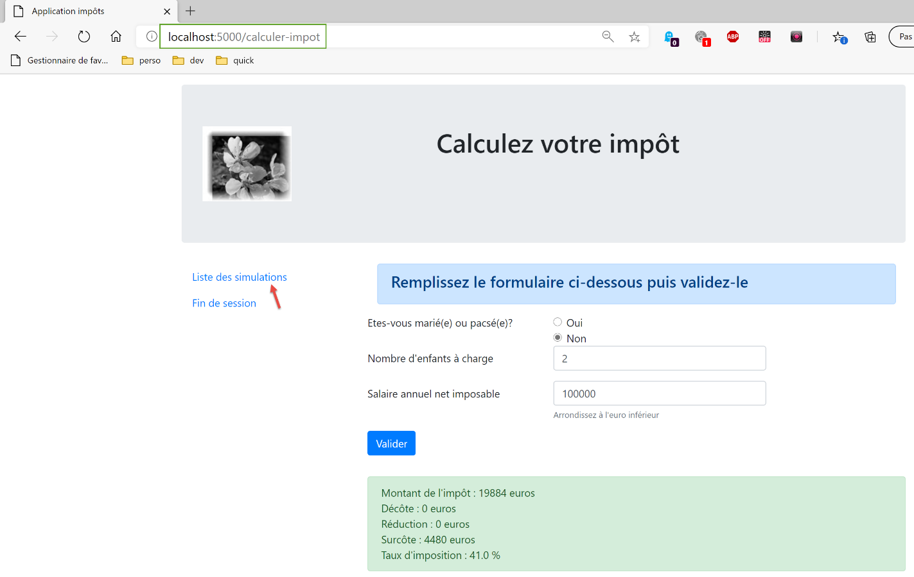

32. Modalità HTML nella versione 12
All'inizio della versione 12 avevamo accennato al fatto che avremmo sviluppato l'applicazione in diverse fasi. Avevamo scritto:
- Sulla base delle viste dell'applicazione HTML, definiremo le azioni che l'applicazione web dovrà implementare. Qui useremo le viste effettive, ma queste potrebbero essere semplicemente delle viste su carta;
- Sulla base di queste azioni, definiremo gli URL di servizio per l'applicazione HTML;
- implementeremo questi URL di servizio utilizzando un server che fornisce JSON. Questo ci permette di definire la struttura del server web senza preoccuparci delle pagine HTML da fornire. Testeremo questi URL di servizio con Postman;
- Testeremo quindi il nostro server JSON con un client da console;
- Una volta convalidato il server JSON, passeremo alla scrittura dell'applicazione HTML;
Abbiamo un server JSON e XML operativo. Ora possiamo passare al server HTML. Vedremo che riutilizza l'intera architettura sviluppata per il server JSON/XML e vi aggiunge la gestione delle viste HTML.
32.1. Architettura MVC
Implementeremo il modello architettonico MVC (Model–View–Controller) come segue:

L'elaborazione di una richiesta del client procederà come segue:
- 1 - Richiesta
Gli URL richiesti avranno il formato http://machine:port/action/param1/param2/… Il [controller principale] utilizzerà un file di configurazione per "instradare" la richiesta al controller corretto. A tal fine, utilizzerà il campo [action] presente nell'URL. Il resto dell'URL [param1/param2/…] è costituito da parametri opzionali che verranno passati all'azione. La "C" in MVC qui si riferisce alla catena [Controller principale, Controller / Azione]. Se nessun controller è in grado di gestire l'azione richiesta, il server web risponderà che l'URL richiesto non è stato trovato.
- 2 - Elaborazione
- L'azione selezionata [2a] può utilizzare i parametri che il [Controller principale] le ha passato. Questi possono provenire da due fonti:
- il percorso [/param1/param2/…] dell'URL,
- dai parametri inviati nel corpo della richiesta del client;
- Durante l'elaborazione della richiesta dell'utente, l'azione potrebbe richiedere il livello [business] [2b]. Una volta elaborata la richiesta del client, questa può innescare varie risposte. Un esempio classico è:
- una risposta di errore se la richiesta non è stata elaborata correttamente;
- una risposta di conferma in caso contrario;
- il [Controller / Action] restituirà la sua risposta [2c] al controller principale insieme a un codice di stato. Questi codici di stato rappresenteranno in modo univoco lo stato attuale dell'applicazione. Si tratterà di un codice di successo o di un codice di errore;
- 3 - Risposta
- A seconda che il client abbia richiesto una risposta JSON, XML o HTML, il [Controller principale] istanzierà [3a] il tipo di risposta appropriato e gli darà istruzioni di inviare la risposta al client. Il [Controller principale] gli passerà sia la risposta che il codice di stato fornito dal [Controller/Azione] che è stato eseguito;
- se la risposta desiderata è di tipo JSON o XML, la risposta selezionata formatterà la risposta proveniente dal [Controller/Azione] che le è stata fornita e la invierà [3c]. Il client in grado di elaborare questa risposta può essere uno script della console Python o uno script JavaScript incorporato in una pagina HTML;
- se la risposta desiderata è di tipo HTML, la risposta selezionata sceglierà [3b] una delle viste HTML [Vuei] utilizzando il codice di stato che le è stato fornito. Questa è la V in MVC. Una singola vista corrisponde a un codice di stato. Questa vista V visualizzerà la risposta proveniente dal [Controller / Action] che è stato eseguito. Avvolge i dati di questa risposta in HTML, CSS e JavaScript. Questi dati sono chiamati modello di vista. Questa è la M in MVC. Il client è molto spesso un browser;
32.2. La struttura delle directory degli script HTML del server

- in [1], gli elementi statici del server HTML;
- in [2-3], le viste del server HTML V. I frammenti [2] sono elementi riutilizzabili all'interno delle viste [3];
- in [4], una cartella utilizzata per testare le viste in modo statico;
- in [5], la cartella per i modelli M delle viste V, la M in MVC;
32.3. Panoramica delle viste
L'applicazione web HTML utilizza quattro viste. La prima vista è la vista di autenticazione:
- l'azione che porta a questa prima vista è l'azione [/init-session] [1];

- facendo clic sul pulsante [Validate] si attiva l'azione [/authenticate-user] con due parametri inviati [2-3];
La vista di calcolo delle imposte:

- in [1], l'azione [/authenticate-user] che fa apparire questa vista;
- in [2], cliccando sul pulsante [Convalida] si avvia l'esecuzione dell'azione [/calculate-tax] con tre parametri inviati [2-5];
- facendo clic sul link [6] si attiva l'azione [/list-simulations] senza parametri;
- facendo clic sul link [7] si attiva l'azione [/end-session] senza parametri;
La terza vista mostra le simulazioni eseguite dall'utente autenticato:

- in [1], l'azione [/list-simulations] che fa apparire questa vista;
- in [2], cliccando sul link [Elimina] si attiva l'azione [/delete-simulation] con un parametro, il numero della simulazione da eliminare dall'elenco;
- facendo clic sul link [3] si attiva l'azione [/display-tax-calculation] senza parametri, che visualizza nuovamente la vista del calcolo delle imposte;
- Cliccando sul link [4] si attiva l'azione [/end-session] senza parametri;
La quarta vista sarà denominata vista degli errori imprevisti:
- in [1]: l'utente ha digitato l'URL da solo. Tuttavia, in questo esempio, non c'erano simulazioni. Riceviamo quindi il messaggio di errore [2]. Conosciamo bene questo messaggio. Lo avevamo in JSON/XML. Chiameremo questo tipo di errore "errore imprevisto" perché non può verificarsi durante il normale utilizzo dell'applicazione. Si verifica solo quando l'utente digita gli URL da solo;

- in caso di errore imprevisto, i link [3-5] consentono di tornare a una delle altre tre viste;
Esaminiamo i vari URL di servizio per il server JSON/XML:
Azione | Ruolo | Contesto di esecuzione |
/init-session | Utilizzato per impostare il tipo (json, xml, html) delle risposte desiderate | Richiesta GET Può essere inviata in qualsiasi momento |
/authenticate-user | Autorizza o nega l'accesso di un utente | Richiesta POST. La richiesta deve avere due parametri inviati [user, password] Può essere emessa solo se il tipo di sessione (json, xml, html) è noto |
/calcolo-imposta | Esegue una simulazione del calcolo delle imposte | Richiesta POST. La richiesta deve avere tre parametri inviati [married, children, salary] Può essere emessa solo se il tipo di sessione (json, xml, html) è noto e l'utente è autenticato |
/list-simulations | Richiesta per visualizzare l'elenco delle simulazioni eseguite dall'inizio della sessione | Richiesta GET. Può essere emessa solo se il tipo di sessione (json, xml, html) è noto e l'utente è autenticato |
/delete-simulation/number | Elimina una simulazione dall'elenco delle simulazioni | Richiesta GET. Può essere emessa solo se il tipo di sessione (json, xml, html) è noto e l'utente è autenticato |
/display-tax-calculation | Visualizza la pagina HTML per il calcolo delle imposte | Richiesta GET. Può essere emessa solo se il tipo di sessione (json, xml, html) è noto e l'utente è autenticato |
/end-session | Termina la sessione di simulazione. | Tecnicamente, la vecchia sessione web viene eliminata e ne viene creata una nuova Può essere emesso solo se il tipo di sessione (json, xml, html) è noto e l'utente è autenticato |
Questi vari URL di servizio saranno utilizzati anche per il server HTML.
32.4. Configurazione delle viste
Un'azione viene gestita da un controller. Questo controller restituisce una tupla (result, status_code) dove:
- [risultato] è un dizionario con le chiavi [azione, stato, risposta];
- [status_code] è il codice di stato della risposta HTTP che verrà inviata al client;
In una sessione HTML, la pagina visualizzata a seguito di un'azione dipende dal codice di stato restituito dal controller. Questa dipendenza si riflette nella configurazione [config] come segue:
# les vues HTML et leurs modèles dépendent de l'état rendu par le contrôleur
"views": [
{
# vue d'authentification
"états": [
# /init-session réussite
700,
# /authentifier-utilisateur échec
201
],
"view_name": "views/vue-authentification.html",
"model_for_view": ModelForAuthentificationView()
},
{
# vue du calcul de l'impôt
"états": [
# /authentifier-utilisateur réussite
200,
# /calculer-impot réussite
300,
# /calculer-impot échec
301,
# /afficher-calcul-impot
800
],
"view_name": "views/vue-calcul-impot.html",
"model_for_view": ModelForCalculImpotView()
},
{
# vue de la liste des simulations
"états": [
# /lister-simulations
500,
# /supprimer-simulation
600
],
"view_name": "views/vue-liste-simulations.html",
"model_for_view": ModelForListeSimulationsView()
}
],
# vue des erreurs inattendues
"view-erreurs": {
"view_name": "views/vue-erreurs.html",
"model_for_view": ModelForErreursView()
},
# redirections
"redirections": [
{
"états": [
400, # /fin-session réussite
],
# redirection vers
"to": "/init-session/html",
}
],
}
- righe 2–40: [views] è un elenco di viste. Consideriamo la vista nelle righe 3–13:
- riga 11: la vista visualizzata V;
- riga 12: l'istanza di classe responsabile della generazione del modello M per questa vista;
- righe 5–10: gli stati che portano a questa vista;
- righe 3–13: la vista di autenticazione;
- righe 14–28: la vista di calcolo delle imposte;
- righe 29–39: la vista dell'elenco delle simulazioni;
- righe 42–46: la vista degli errori imprevisti;
- righe 49–57: Alcuni stati portano a una vista tramite un reindirizzamento. È il caso dello stato 400, che corrisponde all'azione [/fin-session] riuscita. Il client deve quindi essere reindirizzato all'azione [http://machine:port/chemin/init-session/html];
Presenteremo ora le diverse visualizzazioni.
32.5. La vista di autenticazione

32.5.1. Panoramica della vista
La vista di autenticazione è la seguente:

La vista è composta da due elementi che chiameremo frammenti:
- il frammento [1] è generato dal frammento [v-banner.html];
- il frammento [2] è generato dal frammento [v-authentication.html];
La vista di autenticazione è generata dalla seguente pagina [vue-authentification.html]:
<!-- document HTML -->
<!doctype html>
<html lang="fr">
<head>
<!-- Required meta tags -->
<meta charset="utf-8">
<meta name="viewport" content="width=device-width, initial-scale=1, shrink-to-fit=no">
<!-- Bootstrap CSS -->
<link rel="stylesheet" href="https://maxcdn.bootstrapcdn.com/bootstrap/4.4.1/css/bootstrap.min.css">
<title>Application impôts</title>
</head>
<body>
<div class="container">
<!-- headband -->
{% include "fragments/v-bandeau.html" %}
<!-- two-column line -->
<div class="row">
<div class="col-md-9">
{% include "fragments/v-authentification.html" %}
</div>
</div>
<!-- if error - displays an error alert -->
{% if modèle.error %}
<div class="row">
<div class="col-md-9">
<div class="alert alert-danger" role="alert">
Les erreurs suivantes se sont produites :
<ul>{{modèle.erreurs|safe}}</ul>
</div>
</div>
</div>
{% endif %}
</div>
</body>
</html>
Commenti
- riga 2: un documento HTML inizia con questa riga;
- righe 3–36: la pagina HTML è racchiusa tra i tag <html> e </html>;
- righe 4–11: l'intestazione (head) del documento HTML;
- riga 6: il tag <meta charset> indica qui che il documento è codificato in UTF-8;
- riga 7: il tag <meta name='viewport'> imposta la visualizzazione iniziale del viewport: su tutta la larghezza dello schermo che lo visualizza (width) alla sua dimensione iniziale (initial-scale) senza ridimensionarlo per adattarlo a uno schermo più piccolo (shrink-to-fit);
- riga 9: il tag <link rel='stylesheet'> specifica il file CSS che definisce l'aspetto della finestra di visualizzazione. In questo caso, utilizziamo il framework CSS Bootstrap 4.4.1 [https://getbootstrap.com/docs/4.0/getting-started/introduction/] ;
- riga 10: il tag title imposta il titolo della pagina:

- righe 13–35: il corpo della pagina web è racchiuso tra i tag body e /body;
- righe 14–34: il tag <div> delimita una sezione della pagina visualizzata. Gli attributi [class] utilizzati nella vista fanno tutti riferimento al framework CSS Bootstrap. Il tag <div class=’container’> (riga 14) delimita un contenitore Bootstrap;
- riga 26: viene incluso il frammento [v-banner.html]. Questo frammento genera il banner della pagina [1]. Lo descriveremo tra poco;
- righe 18–22: il tag <div class=’row’> definisce una riga Bootstrap. Queste righe sono composte da 12 colonne;
- Riga 19: il tag definisce una sezione a 9 colonne;
- riga 20: includiamo il frammento [v-authentification.html], che visualizza il modulo di autenticazione della pagina [2]. Lo descriveremo tra poco;
- righe 24–33: il codice HTML in queste righe viene utilizzato solo se [model.error] è True. Procederemo sempre in questo modo: il modello per una vista HTML sarà incapsulato in un dizionario [model];
- righe 24–33: L'autenticazione fallisce se l'utente inserisce credenziali errate. In questo caso, la vista di autenticazione viene visualizzata nuovamente con un messaggio di errore. L'attributo [model.error] indica se visualizzare questo messaggio di errore;
- righe 27–30: definiscono un'area con sfondo rosa (class="alert alert-danger") (riga 27);

- riga 28: del testo;
- riga 29: il tag HTML <ul> (elenco non ordinato) visualizza un elenco puntato. Ogni voce dell'elenco deve avere la sintassi <li>item</li>. Qui, visualizziamo il valore di [model.errors]. Questo valore viene filtrato (per la presenza di |) dal filtro [safe]. Per impostazione predefinita, quando una stringa viene inviata al browser, Flask "escapa" eventuali tag HTML che potrebbe contenere in modo che il browser non li interpreti. Ma a volte vogliamo che vengano interpretati. Questo è il caso qui, dove la stringa [model.errors] contiene i tag HTML <li> e </li> utilizzati per delimitare una voce dell'elenco. In questo caso, utilizziamo il filtro [safe], che indica a Flask che la stringa da visualizzare è sicura e che quindi non deve sanificare alcun tag HTML che trova;
Notiamo gli elementi dinamici da definire in questo codice:
- [model.error]: per visualizzare un messaggio di errore;
- [model.errors]: un elenco (nel senso HTML) di messaggi di errore;
32.5.2. Il frammento [v-banner.html]
Il frammento [v-banner.html] visualizza il banner superiore di tutte le viste nell'applicazione web:

Il codice per il frammento [v-banner.html] è il seguente:
<!-- Bootstrap Jumbotron -->
<div class="jumbotron">
<div class="row">
<div class="col-md-4">
<img src="{{ url_for('static', filename='images/logo.jpg') }}" alt="Cerisier en fleurs"/>
</div>
<div class="col-md-8">
<h1>
Calculez votre impôt
</h1>
</div>
</div>
</div>
Commenti
- righe 2–13: Il banner è racchiuso in una sezione Jumbotron di Bootstrap [<div class="jumbotron">]. Questa classe Bootstrap applica uno stile specifico al contenuto visualizzato per farlo risaltare;
- righe 3–12: una riga Bootstrap;
- righe 4–6: un'immagine [img] è posizionata nelle prime quattro colonne della riga;
- riga 5: la sintassi:
utilizza la funzione [url_for] di Flask. In questo caso, il suo valore è l'URL del file [images/logo.jpg] nella cartella [static];
- righe 7–11: le altre 8 colonne della riga (ricordate che ce ne sono 12 in totale) saranno utilizzate per visualizzare il testo (riga 9) con caratteri di grandi dimensioni (<h1>, righe 8–10);
32.5.3. Il frammento [v-authentification.html]
Il frammento [v-authentification.html] visualizza il modulo di autenticazione dell'applicazione web:

Il codice per il frammento [v-authentification.html] è il seguente:
<!-- form HTML - post its values with the [authenticate-user] action -->
<form method="post" action="/authentifier-utilisateur">
<!-- title -->
<div class="alert alert-primary" role="alert">
<h4>Veuillez vous authentifier</h4>
</div>
<!-- bootstrap form -->
<fieldset class="form-group">
<!-- 1st line -->
<div class="form-group row">
<!-- wording -->
<label for="user" class="col-md-3 col-form-label">Nom d'utilisateur</label>
<div class="col-md-4">
<!-- text input field -->
<input type="text" class="form-control" id="user" name="user"
placeholder="Nom d'utilisateur" value="{{ modèle.login }}" required>
</div>
</div>
<!-- 2nd line -->
<div class="form-group row">
<!-- wording -->
<label for="password" class="col-md-3 col-form-label">Mot de passe</label>
<!-- text input field -->
<div class="col-md-4">
<input type="password" class="form-control" id="password" name="password"
placeholder="Mot de passe" required>
</div>
</div>
<!-- submit] button on a 3rd line -->
<div class="form-group row">
<div class="col-md-2">
<button type="submit" class="btn btn-primary">Valider</button>
</div>
</div>
</fieldset>
</form>
Commenti
- Righe 2–39: Il tag <form> definisce un modulo HTML. Questo modulo presenta generalmente le seguenti caratteristiche:
- definisce campi di immissione (tag <input> alle righe 17 e 27);
- ha un pulsante [submit] (riga 34) che invia i valori inseriti all'URL specificato nell'attributo [action] del tag [form] (riga 2). Il metodo HTTP utilizzato per richiedere questo URL è specificato nell'attributo [method] del tag [form] (riga 2);
- in questo caso, quando l'utente fa clic sul pulsante [Submit] (riga 34), il browser invierà tramite POST (riga 2) i valori inseriti nel modulo all'URL [/authenticate-user] (riga 2);
- I valori inviati sono quelli inseriti dall'utente nei campi di immissione alle righe 17 e 27. Verranno inviati nel corpo della richiesta HTTP inviata dal browser nel formato [x-www-form-urlencoded]. I nomi dei parametri [user, password] corrispondono agli attributi [name] dei campi di immissione alle righe 17 e 27;
- Righe 5–7: una sezione Bootstrap per visualizzare un titolo su sfondo blu:
- righe 10–37: un modulo Bootstrap. Tutti gli elementi del modulo saranno quindi stilizzati in modo specifico;

- righe 12–20: definiscono la prima riga Bootstrap del modulo:

- la riga 14 definisce l'etichetta [1] su tre colonne. L'attributo [for] del tag [label] collega l'etichetta all'attributo [id] del campo di immissione alla riga 17;
- righe 15–19: inseriscono il campo di immissione in un layout a quattro colonne;
- righe 17–18: il tag HTML [input] definisce un campo di immissione. Ha diversi attributi:
- [type='text']: si tratta di un campo di immissione testo. È possibile digitare qualsiasi cosa al suo interno;
- [class='form-control']: stile Bootstrap per il campo di immissione;
- [id='user']: identificatore del campo di immissione. Questo identificatore viene generalmente utilizzato dal codice CSS e JavaScript;
- [name='user']: il nome del campo di immissione. Il valore inserito dall'utente verrà inviato dal browser con questo nome [user=xx];
- [placeholder='prompt']: il testo visualizzato nel campo di immissione quando l'utente non ha ancora digitato nulla;

- (continua)
- [value='value']: il testo 'value' verrà visualizzato nel campo di immissione non appena questo appare, prima che l'utente inserisca qualsiasi altra cosa. Questo meccanismo viene utilizzato in caso di errore per visualizzare l'immissione che ha causato l'errore. In questo caso, questo valore sarà il valore della variabile [model.login];
- [required]: richiede all'utente di inserire un valore affinché il modulo possa essere inviato al server:
- righe 21–30: codice simile per il campo di immissione della password;
- riga 27: [type='password'] crea un campo di immissione testo (è possibile digitare qualsiasi cosa) ma i caratteri inseriti sono nascosti:

- righe 32–36: una terza riga Bootstrap per il pulsante [Submit];
- riga 34: poiché presenta l'attributo [type="submit"], cliccando su questo pulsante si fa in modo che il browser invii i valori inseriti al server, come spiegato in precedenza. L'attributo CSS [class="btn btn-primary"] visualizza un pulsante blu:

C'è un'ultima cosa da spiegare. Alla riga 2, l'attributo [action="/authentifier-utilisateur"] definisce un URL incompleto (non inizia con http://machine:port/chemin). Nel nostro esempio, tutti gli URL dell'applicazione hanno la forma [http://machine:port/chemin/action/param1/param2/..], dove [http://machine:port/chemin] è la radice degli URL del servizio. In [action="/authenticate-user"], abbiamo un URL assoluto, ovvero misurato dalla radice degli URL. L'URL completo per la richiesta POST è quindi [http://machine:port/chemin/authentifier-utilisateur], ed è questo che il browser utilizzerà.
Si noti che questo frammento utilizza il modello [model.login].
32.5.4. Test visivi
Possiamo testare le viste ben prima di integrarle nell'applicazione. L'obiettivo qui è testarne l'aspetto visivo. Raccoglieremo tutte le viste di test nella cartella [tests_views] del progetto:

Per testare la vista V [vue-authentification.html], dobbiamo creare il modello di dati M che verrà visualizzato. Lo facciamo con lo script [test_vue_authentification.py]:
Commenti
- righe 1-3: creiamo un'applicazione Flask il cui unico scopo è visualizzare la vista [authentication-view.html] (riga 22);
- riga 7: l'applicazione ha un solo URL di servizio;
- righe 9–20: la vista di autenticazione presenta parti dinamiche controllate dall'oggetto [model]. Questo oggetto è chiamato modello di vista. Secondo una delle due definizioni fornite per l'acronimo MVC, qui abbiamo la M di MVC ( ). Nel definire la vista [authentication-view.html], abbiamo identificato tre valori dinamici:
- [model.error]: un valore booleano che indica se visualizzare un messaggio di errore;
- [model.errors]: un elenco HTML di messaggi di errore;
- [model.login]: il login di un utente;
Dobbiamo quindi definire questi tre valori dinamici.
- Righe 9–20: definiamo i tre elementi dinamici della vista di autenticazione;
Per eseguire il test, lanciamo lo script [tests_views/test_vue_authentification.py] e richiediamo l'URL [/localhost:5000/]:
Continuiamo questi test visivi finché non siamo soddisfatti del risultato.

32.5.5. Calcolo del modello di vista
Una volta determinato l'aspetto visivo della vista, possiamo procedere al calcolo del modello di vista in condizioni reali. I modelli di vista saranno generati dalle classi situate nella cartella [models_for_views]:

Ogni classe che genera un modello di vista implementerà la seguente interfaccia [InterfaceModelForView]:
from abc import ABC, abstractmethod
from flask import Request
from werkzeug.local import LocalProxy
class InterfaceModelForView(ABC):
@abstractmethod
def get_model_for_view(self, request: Request, session: LocalProxy, config: dict, résultat: dict) -> dict:
pass
- Righe 8–10: Il metodo [get_model_for_view] è responsabile della creazione di un modello di vista incapsulato in un dizionario. A tal fine, riceve le seguenti informazioni:
- [request, session, config] sono gli stessi parametri utilizzati dal controller dell'azione. Vengono quindi passati anche al modello;
- il controller ha prodotto un risultato [result] che viene anch'esso passato al modello. Questo risultato contiene un elemento importante [status] che indica come è andata l'esecuzione dell'azione corrente. Il modello utilizzerà questa informazione;
Abbiamo visto che nella configurazione dell'applicazione [config], i codici di stato restituiti dai controller vengono utilizzati per designare la vista HTML da visualizzare:
# les vues HTML et leurs modèles dépendent de l'état rendu par le contrôleur
"views": [
{
# vue d'authentification
"états": [
# /init-session réussite
700,
# /authentifier-utilisateur échec
201
],
"view_name": "views/vue-authentification.html",
"model_for_view": ModelForAuthentificationView()
},
{
# vue du calcul de l'impôt
"états": [
# /authentifier-utilisateur réussite
200,
# /calculer-impot réussite
300,
# /calculer-impot échec
301,
# /afficher-calcul-impot
800
],
"view_name": "views/vue-calcul-impot.html",
"model_for_view": ModelForCalculImpotView()
},
{
# vue de la liste des simulations
"états": [
# /lister-simulations
500,
# /supprimer-simulation
600
],
"view_name": "views/vue-liste-simulations.html",
"model_for_view": ModelForListeSimulationsView()
}
],
# vue des erreurs inattendues
"view-erreurs": {
"view_name": "views/vue-erreurs.html",
"model_for_view": ModelForErreursView()
},
# redirections
"redirections": [
{
"états": [
400, # /fin-session réussite
],
# redirection vers
"to": "/init-session/html",
}
],
}
Sono quindi i codici di stato [700, 201] (righe 7 e 9) a determinare la visualizzazione della pagina di autenticazione. Per comprendere il significato di questi codici, possiamo fare riferimento ai test [Postman] eseguiti sull'applicazione JSON:
- [init-session-json-700]: 700 è il codice di stato che segue un'azione [init-session] riuscita: viene quindi visualizzato il modulo di autenticazione vuoto;
- [authenticate-user-201]: 201 è il codice di stato che segue un'azione [authenticate-user] non riuscita (credenziali non riconosciute): viene quindi visualizzato il modulo di autenticazione in modo che le credenziali possano essere corrette;
Ora che sappiamo quando deve essere visualizzato il modulo di autenticazione, possiamo definirne il modello in [ModelForAuthentificationView] (riga 12):
Commenti
- riga 8: il metodo [get_model_for_view] della vista di autenticazione deve restituire un dizionario con tre chiavi [error, errors, login]. Questo calcolo si basa sul codice di stato restituito dal controller dell'azione;
- riga 12: recuperiamo il codice di stato restituito dal controller che ha gestito l'azione corrente;
- righe 14–29: il modello dipende da questo codice di stato;
- righe 15–18: caso in cui deve essere visualizzato un modulo di autenticazione vuoto;
- righe 20–29: caso di autenticazione fallita: visualizziamo il nome utente inserito dall'utente e mostriamo un messaggio di errore. L'utente può quindi effettuare un altro tentativo di autenticazione;
- riga 22: il nome utente inizialmente inserito dall'utente può essere recuperato dalla richiesta del client;
- riga 24: viene indicato che ci sono errori da visualizzare;
- righe 26–29: in caso di errore, result[‘response’] contiene un elenco di errori;
32.5.6. Generazione di risposte HTML
Torniamo al modello MVC dell'applicazione HTML:
- in 2 (2a, 2b): il controller esegue un'azione;
- in 3 (3a, 3b, 3c): viene selezionata una vista e inviata al client;
In [3a], viene selezionato un tipo di risposta (JSON, XML, HTML). Abbiamo visto come vengono generate le risposte JSON e XML, ma non ancora quelle HTML. Queste sono generate dalla classe [HtmlResponse]:

Ricordiamo come viene determinato il tipo di risposta da inviare all'utente nello script principale [main]:
….
# on construit la réponse à envoyer
response_builder = config["responses"][type_response]
response, status_code = response_builder \
.build_http_response(request, session, config, status_code, résultat)
# on envoie la réponse
return response, status_code
dove, alla riga 3, config['responses'] è il seguente dizionario:
# les différents types de réponse (json, xml, html)
"responses": {
"json": JsonResponse(),
"html": HtmlResponse(),
"xml": XmlResponse()
},
È quindi la classe [HtmlResponse] a generare la risposta HTML. Il suo codice è il seguente:
- riga 11: il metodo [build_http_response], responsabile della generazione della risposta HTML, riceve i seguenti parametri:
- [request, session, dict]: questi sono i parametri utilizzati dal controller per elaborare l'azione corrente;
- [status_code, result] sono i due risultati prodotti da questo stesso controller;
- riga 14: come abbiamo accennato, la risposta HTML del server dipende dal codice di stato contenuto nel dizionario [result];
- righe 16–22: i reindirizzamenti vengono gestiti per primi. Per ora, ignoreremo questo aspetto finché non incontreremo un esempio di reindirizzamento. Si noti che i reindirizzamenti sono tipicamente un caso d’uso per il server HTML. Ciò non si verifica con i server JSON o XML;
- righe 24–41: cerchiamo tra le viste quella il cui elenco [states] contiene lo stato desiderato;
- righe 42–46: se non viene trovata alcuna vista, si tratta di un errore imprevisto. Vediamo un esempio. Nel normale funzionamento dell'applicazione, l'azione [/delete-simulation] non dovrebbe mai fallire. Infatti, vedremo che questa eliminazione delle simulazioni viene eseguita utilizzando link generati dal codice. Questi link sono validi e non possono causare un errore. Tuttavia, come abbiamo visto, l'utente può digitare direttamente l'URL [/delete-simulation/id] e quindi innescare un errore. In questo caso, il [SupprimerSimulationController] restituisce un codice di stato 601. Tuttavia, questo codice di stato non è nell'elenco dei codici di stato che innescano la visualizzazione di una pagina HTML. Pertanto, verrà visualizzata la vista di errore. È definita come segue nella configurazione:
# vue des erreurs inattendues
"view-erreurs": {
"view_name": "views/vue-erreurs.html",
"model_for_view": ModelForErreursView()
},
- riga 49: una volta individuata la vista da visualizzare, recuperiamo la classe che genera il suo template. Anche questa classe si trova nella configurazione [config];
- riga 50: una volta trovata questa classe, generiamo il modello della vista;
- riga 52: una volta calcolato il modello M della vista V, possiamo generare il codice HTML della vista;
- righe 54–55: costruiamo la risposta HTTP con un corpo HTML;
- righe 56–57: restituiamo la risposta HTTP con il suo codice di stato;
32.5.7. Test [Postman]
Eseguiremo richieste che restituiscono i codici [700, 201], che visualizzano la pagina di autenticazione:
- [init-session-html-700]: 700 è il codice di stato che segue un'azione [init-session] riuscita; viene quindi visualizzato il modulo di autenticazione vuoto;
- [authenticate-user-201]: 201 è il codice di stato che segue un'azione [authenticate-user] non riuscita (credenziali non riconosciute): viene quindi visualizzato il modulo di autenticazione in modo che possa essere corretto;
Basta riutilizzarli e verificare se visualizzano correttamente la vista di autenticazione. Ecco due esempi:
Caso 1: [init-session-html-700], inizio di una sessione HTML;

La risposta è la seguente:

- In [5], la modalità [Preview] consente di visualizzare la pagina HTML ricevuta;
- in [6], vediamo il modulo vuoto previsto;
- in [7], Postman non ha seguito il link all'immagine della pagina;
- in [8], la modalità [Raw] fornisce l'accesso all'HTML ricevuto;

- In [3], il link che Postman non è riuscito a caricare. Ha visualizzato il valore dell'attributo [alt=alternative], che viene mostrato quando l'immagine non può essere caricata. In questo caso, è più che altro che Postman non ha voluto caricarla. Su , puoi verificarlo richiedendo l'URL [http://localhost:5000/static/images.logo.jpg] con Postman:
Caso 2: [user-authentication-201], errore di autenticazione

Ora, eseguiamo un'autenticazione errata dopo aver inizializzato con successo una sessione HTML:

Sopra:
- a [4,7]: la richiesta invia la stringa [user=bernard&password=thibault];
La risposta è la seguente:

- in [4], viene visualizzato un messaggio di errore;
- in [3], viene visualizzato nuovamente l'utente errato;
32.5.8. Conclusione
Siamo riusciti a testare la vista [vue-authentification.html] senza aver scritto le altre viste. Ciò è stato possibile perché:
- tutti i controller sono stati scritti;
- [Postman] ci permette di inviare richieste al server senza bisogno di tutte le viste. Quando si scrivono i controller, bisogna essere pronti a gestire richieste che nessuna vista consentirebbe. Non si dovrebbe mai dare per scontato a priori che "questa richiesta sia impossibile". È necessario verificare;
32.6. La vista di calcolo delle imposte

32.6.1. Panoramica della vista
La vista di calcolo delle imposte è la seguente:

La vista è composta da tre parti:
- 1: Il banner in alto è generato dal frammento [v-bandeau.html] già presentato;
- 2: il modulo di calcolo delle imposte generato dal frammento [v-calcul-impot.html];
- 3: un menu con due link, generato dal frammento [v-menu.html];
La vista di calcolo delle imposte è generata dal seguente codice [vue-calcul-impot.html]:
<!-- document HTML -->
<!doctype html>
<html lang="fr">
<head>
<!-- Required meta tags -->
<meta charset="utf-8">
<meta name="viewport" content="width=device-width, initial-scale=1, shrink-to-fit=no">
<!-- Bootstrap CSS -->
<link rel="stylesheet" href="https://maxcdn.bootstrapcdn.com/bootstrap/4.4.1/css/bootstrap.min.css">
<title>Application impôts</title>
</head>
<body>
<div class="container">
<!-- headband -->
{% include "fragments/v-bandeau.html" %}
<!-- two-column line -->
<div class="row">
<!-- the menu -->
<div class="col-md-3">
{% include "fragments/v-menu.html" %}
</div>
<!-- calculation form -->
<div class="col-md-9">
{% include "fragments/v-calcul-impot.html" %}
</div>
</div>
<!-- success stories -->
{% if modèle.success %}
<!-- a success alert is displayed -->
<div class="row">
<div class="col-md-3">
</div>
<div class="col-md-9">
<div class="alert alert-success" role="alert">
{{modèle.impôt}}</br>
{{modèle.décôte}}</br>
{{modèle.réduction}}</br>
{{modèle.surcôte}}</br>
{{modèle.taux}}</br>
</div>
</div>
</div>
{% endif %}
{% if modèle.error %}
<!-- 9-column error list -->
<div class="row">
<div class="col-md-3">
</div>
<div class="col-md-9">
<div class="alert alert-danger" role="alert">
Les erreurs suivantes se sont produites :
<ul>{{modèle.erreurs | safe}}</ul>
</div>
</div>
</div>
{% endif %}
</div>
</body>
</html>
Commenti
- Commentiamo solo le nuove funzionalità che non sono state ancora incontrate;
- riga 16: inclusione del banner superiore della vista nella prima riga Bootstrap della vista;
- riga 21: inclusione del menu, che occuperà tre colonne della seconda riga Bootstrap della vista (righe 18, 20);
- riga 25: inclusione del modulo di calcolo delle imposte, che occuperà nove colonne (riga 24) della seconda riga Bootstrap della vista (riga 18);
- righe 30–46: se il calcolo delle imposte ha esito positivo [model.success=True], il risultato del calcolo viene visualizzato in un riquadro verde (righe 37–43). Questa casella si trova nella terza riga Bootstrap della vista (riga 32) e occupa nove colonne (riga 36) a destra di tre colonne vuote (righe 33–35). Questa casella si troverà quindi sotto il modulo di calcolo delle imposte;
- righe 48–61: se il calcolo dell'imposta fallisce [model.error=True], viene visualizzato un messaggio di errore in un contenitore rosa (righe 55–58). Questo frame si trova nella terza riga Bootstrap della vista (riga 50) e occupa nove colonne (riga 54) a destra di tre colonne vuote (righe 51–53). Questo frame si troverà quindi anch'esso sotto il modulo di calcolo delle imposte;
32.6.2. Il frammento [v-calcul-impot.html]
Il frammento [v-calcul-impot.html] visualizza il modulo di calcolo delle imposte dell'applicazione web:
Il codice del frammento [v-calcul-impot.html] è il seguente:

<!-- form HTML posted -->
<form method="post" action="/calculer-impot">
<!-- 12-column message on blue background -->
<div class="col-md-12">
<div class="alert alert-primary" role="alert">
<h4>Remplissez le formulaire ci-dessous puis validez-le</h4>
</div>
</div>
<!-- form elements -->
<fieldset class="form-group">
<!-- first row of 9 columns -->
<div class="row">
<!-- 4-column wording -->
<legend class="col-form-label col-md-4 pt-0">Etes-vous marié(e) ou pacsé(e)?</legend>
<!-- 5-column radio buttons-->
<div class="col-md-5">
<div class="form-check">
<input class="form-check-input" type="radio" name="marié" id="gridRadios1" value="oui" {{modèle.checkedOui}}>
<label class="form-check-label" for="gridRadios1">
Oui
</label>
</div>
<div class="form-check">
<input class="form-check-input" type="radio" name="marié" id="gridRadios2" value="non" {{modèle.checkedNon}}>
<label class="form-check-label" for="gridRadios2">
Non
</label>
</div>
</div>
</div>
<!-- second row of 9 columns -->
<div class="form-group row">
<!-- 4-column wording -->
<label for="enfants" class="col-md-4 col-form-label">Nombre d'enfants à charge</label>
<!-- 5-column numerical entry field for number of children -->
<div class="col-md-5">
<input type="number" min="0" step="1" class="form-control" id="enfants" name="enfants" placeholder="Nombre d'enfants à charge" value="{{modèle.enfants}}" required>
</div>
</div>
<!-- third row of 9 columns -->
<div class="form-group row">
<!-- 4-column wording -->
<label for="salaire" class="col-md-4 col-form-label">Salaire annuel net imposable</label>
<!-- 5-column numeric input field for wages -->
<div class="col-md-5">
<input type="number" min="0" step="1" class="form-control" id="salaire" name="salaire" placeholder="Salaire annuel net imposable" aria-describedby="salaireHelp" value="{{modèle.salaire}}" required>
<small id="salaireHelp" class="form-text text-muted">Arrondissez à l'euro inférieur</small>
</div>
</div>
<!-- fourth row, [submit] button on 5 columns -->
<div class="form-group row">
<div class="col-md-5">
<button type="submit" class="btn btn-primary">Valider</button>
</div>
</div>
</fieldset>
</form>
Commenti
- Riga 2: Il modulo HTML verrà inviato (attributo method) all'URL [/calculer-impot] (attributo action). I valori inviati saranno quelli dei campi di immissione:
- il valore del pulsante di opzione selezionato nel modulo:
- [married=yes] se è selezionato il pulsante di opzione [Yes] (righe 17–22). [married] è il valore dell'attributo [name] nella riga 18, [yes] è il valore dell'attributo [value] nella riga 18;
- [married=no] se è selezionato il pulsante di opzione [No] (righe 23–28). [married] è il valore dell'attributo [name] alla riga 24, e [no] è il valore dell'attributo [value] alla riga 24;
- il valore del campo di immissione numerico alla riga 37 nella forma [children=xx], dove [children] è il valore dell'attributo [name] alla riga 37 e [xx] è il valore inserito dall'utente tramite la tastiera;
- il valore del campo di immissione numerico alla riga 46 nella forma [salary=xx], dove [salary] è il valore dell'attributo [name] alla riga 46 e [xx] è il valore inserito dall'utente tramite la tastiera;
Infine, il valore inviato sarà nella forma [married=xx&children=yy&salary=zz].
- (continua)
- i valori inseriti verranno inviati quando l'utente clicca sul pulsante [submit] alla riga 53;
- Righe 16–30: I due pulsanti di opzione:

I due pulsanti di opzione fanno parte dello stesso gruppo di pulsanti di opzione perché hanno lo stesso attributo [name] (righe 18, 24). Il browser garantisce che all'interno di un gruppo di pulsanti di opzione ne sia selezionato solo uno alla volta. Pertanto, cliccando su uno si deseleziona quello che era stato selezionato in precedenza;
- si tratta di pulsanti di opzione grazie all'attributo [type="radio"] (righe 18, 24);
- Quando il modulo viene visualizzato (prima dell'inserimento dei dati), uno dei pulsanti di opzione deve essere selezionato: per farlo, basta aggiungere l'attributo [checked='checked'] al tag <input type="radio"> corrispondente. Ciò si ottiene utilizzando variabili dinamiche:
- [model.checkedYes] alla riga 18;
- [model->checkedNo] alla riga 24;
Queste variabili faranno parte del modello di visualizzazione.
- Riga 37: un campo di immissione numerico [type="number"] con un valore minimo di 0 [min="0"]. Nei browser moderni, ciò significa che l'utente può inserire solo un numero >=0. In questi stessi browser moderni, l'immissione può essere effettuata utilizzando un cursore che può essere cliccato verso l'alto o verso il basso. L'attributo [step="1"] alla riga 37 indica che il cursore funzionerà con incrementi di 1. Di conseguenza, il cursore accetterà solo valori interi compresi tra 0 e n con incrementi di 1. Per l'inserimento manuale, ciò significa che i numeri con decimali non saranno accettati;
- riga 37: in alcune visualizzazioni, il campo di immissione children deve essere precompilato con l'ultima immissione effettuata in quel campo. Per farlo, utilizziamo l'attributo [value], che imposta il valore da visualizzare nel campo di immissione. Questo valore sarà dinamico e generato dalla variabile [model.children];

- Riga 37: L'attributo [required] obbliga l'utente a inserire i dati affinché il modulo venga convalidato;
- riga 46: per il campo dello stipendio valgono le stesse spiegazioni fornite per il campo dei figli;
- riga 53: il pulsante [submit] attiva una richiesta POST dei valori inseriti all'URL [/calculer-impot] (riga 2);

32.6.3. Il frammento [v-menu.html]
Questo frammento visualizza un menu a sinistra del modulo di calcolo delle imposte:

Il codice per questo frammento è il seguente:
<!-- bootstrap menu -->
<nav class="nav flex-column">
<!-- display a list of links HTML -->
{% for optionMenu in modèle.optionsMenu %}
<a class="nav-link" href="{{optionMenu.url}}">{{optionMenu.text}}</a>
{% endfor %}
</nav>
Commenti
- righe 2–7: il tag HTML [nav] racchiude una sezione del documento HTML contenente collegamenti di navigazione ad altri documenti;
- riga 5: il tag HTML [a] introduce un link di navigazione:
- [optionMenu.url]: è l'URL a cui l'utente viene indirizzato quando clicca sul link [optionMenu.text]. Il browser esegue quindi un'operazione [GET optionMenu.url]. [optionMenu.url] sarà un URL assoluto relativo alla radice dell'applicazione [http://machine:port/path]. Pertanto, in [1], creeremo il link:
- Riga 5: il modello [modèle.optionsMenu] del frammento sarà un elenco nel seguente formato:
- Righe 2, 7: Le classi CSS [nav, flex-column, nav-link] sono classi Bootstrap che definiscono l’aspetto del menu;
32.6.4. Test visivo
Raccogliamo questi vari elementi nella cartella [Tests] e creiamo un modello di test per la vista [vue-calcul-impot.html]:

Lo script di test [test_vue_calcul_impot] sarà il seguente:
Commenti
- righe 9–34: inizializza tutte le parti dinamiche della vista [vue-calcul-impot.html] e i frammenti [v-calcul-impot.html] e [v-menu.html];
- riga 36: viene visualizzata la vista [vue-calcul-impot.html];
Quando eseguiamo lo script di test [test_vue_calcul_impot], otteniamo il seguente risultato:
Lavoriamo su questa vista finché non siamo soddisfatti del risultato visivo. Possiamo quindi procedere all'integrazione della vista nell'applicazione web attualmente in fase di sviluppo.

32.6.5. Calcolo del modello di vista
Una volta determinato l'aspetto visivo della vista, possiamo procedere al calcolo del modello di vista in condizioni reali. Esaminiamo i codici di stato che portano a questa vista. Si trovano nel file di configurazione:
{
# vue du calcul de l'impôt
"états": [
# /authentifier-utilisateur réussite
200,
# /calculer-impot réussite
300,
# /calculer-impot échec
301,
# /afficher-calcul-impot
800
],
"view_name": "views/vue-calcul-impot.html",
"model_for_view": ModelForCalculImpotView()
},
Sono quindi i codici di stato [200, 300, 301, 800] a far apparire la vista di calcolo delle imposte. Per capire il significato di questi codici, possiamo fare riferimento ai test [Postman] eseguiti sull'applicazione JSON:
- [authenticate-user-200]: 200 è il codice di stato che segue un'azione [authenticate-user] riuscita; viene quindi visualizzato il modulo di calcolo delle imposte vuoto;
- [calculate-tax-300]: 300 è il codice di stato restituito al termine di un'operazione [calculate-tax] riuscita. Viene quindi visualizzato il modulo di calcolo, che mostra i dati inseriti e l'importo dell'imposta. L'utente può quindi eseguire un altro calcolo;
- il codice di stato [301] è quello restituito in caso di calcolo dell'imposta errato;
- il codice di stato [800] verrà discusso più avanti. Non l'abbiamo ancora incontrato;
Ora che sappiamo quando deve essere visualizzato il modulo di calcolo dell'imposta, possiamo definire il suo modello nella classe [ModelForCalculImpotView]:

Commenti
- riga 12: la vista da visualizzare dipende dal codice di stato restituito dal controller;
- righe 14–21: visualizzazione di un modulo vuoto;
- righe 22–35: calcolo dell'imposta riuscito. I valori inseriti e l'importo dell'imposta vengono visualizzati nuovamente;
- righe 36–47: caso in cui il calcolo dell'imposta non va a buon fine;
- righe 49–52: calcolo delle due opzioni di menu;
32.6.6. Test [Postman]
Inizializziamo una sessione HTML con la richiesta [init-session-html-700], quindi effettuiamo l'autenticazione con la richiesta [authenticate-user-200]. Successivamente, utilizziamo la seguente richiesta [calculate-tax-300]:
La risposta del server è la seguente:


Ora proviamo la seguente richiesta [calculate-tax-301]:

La risposta del server è la seguente:
Ora proviamo uno scenario inaspettato: uno in cui mancano dei parametri dalla richiesta POST. Questo scenario non è possibile durante il normale funzionamento dell'applicazione. Ma chiunque può "armeggiare" con una richiesta HTTP come stiamo facendo ora:


- in [6], abbiamo deselezionato il parametro inviato [married];
La risposta del server è la seguente:

- in [3], il messaggio di errore del server;
In questa applicazione, avevamo una scelta. Avremmo potuto assegnare a questo caso di errore un codice di stato che reindirizza alla pagina degli errori imprevisti. In questa applicazione, abbiamo scelto due codici di stato per ciascun controller:
- [xx0]: per il successo;
- [xx1]: per l'insuccesso;
Per i casi di errore, possiamo utilizzare codici di stato diversi per consentire una gestione degli errori più granulare. Ad esempio, avremmo potuto utilizzare:
- [xx1]: per gli errori da visualizzare nella pagina che ha causato l'errore;
- [xx2]: per errori imprevisti durante il normale utilizzo dell'applicazione;
32.7. La vista elenco della simulazione

32.7.1. Panoramica della vista
La vista che mostra l'elenco delle simulazioni è la seguente:

La vista generata dal codice [vue-liste-simulations.html] è composta da tre parti:
- 1: il banner in alto è generato dal frammento [v-banner.html] già presentato;
- 3: la tabella delle simulazioni generata dal frammento [v-simulation-list.html];
- 2: un menu con due link, generato dal frammento [v-menu.html] già presentato;
La vista di simulazione è generata dal seguente codice [vue-liste-simulations.html]:
<!-- document HTML -->
<!doctype html>
<html lang="fr">
<head>
<!-- Required meta tags -->
<meta charset="utf-8">
<meta name="viewport" content="width=device-width, initial-scale=1, shrink-to-fit=no">
<!-- Bootstrap CSS -->
<link rel="stylesheet" href="https://maxcdn.bootstrapcdn.com/bootstrap/4.4.1/css/bootstrap.min.css">
<title>Application impôts</title>
</head>
<body>
<div class="container">
<!-- headband -->
{% include "fragments/v-bandeau.html" %}
<!-- two-column line -->
<div class="row">
<!-- three-column menu-->
<div class="col-md-3">
{% include "fragments/v-menu.html" %}
</div>
<!-- list of simulations on 9 columns-->
<div class="col-md-9">
{% include "fragments/v-liste-simulations.html" %}
</div>
</div>
</div>
</body>
</html>
Commenti
- riga 16: inserimento del banner dell'applicazione [1];
- riga 21: inserimento del menu [2]. Verrà visualizzato in tre colonne sotto il banner;
- riga 26: inserimento della tabella di simulazione [3]. Verrà visualizzata in nove colonne sotto il banner e a destra del menu;
Abbiamo già commentato due dei tre frammenti di questa vista:
Il frammento [v-liste-simulations.html] è il seguente:
{% if modèle.simulations is undefined or modèle.simulations|length==0 %}
<!-- message on blue background -->
<div class="alert alert-primary" role="alert">
<h4>Votre liste de simulations est vide</h4>
</div>
{% endif %}
{% if modèle.simulations is defined and modèle.simulations|length!=0 %}
<!-- message on blue background -->
<div class="alert alert-primary" role="alert">
<h4>Liste de vos simulations</h4>
</div>
<!-- simulation table -->
<table class="table table-sm table-hover table-striped">
<!-- headers of the six table columns -->
<thead>
<tr>
<th scope="col">#</th>
<th scope="col">Marié</th>
<th scope="col">Nombre d'enfants</th>
<th scope="col">Salaire annuel</th>
<th scope="col">Montant impôt</th>
<th scope="col">Surcôte</th>
<th scope="col">Décôte</th>
<th scope="col">Réduction</th>
<th scope="col">Taux</th>
<th scope="col"></th>
</tr>
</thead>
<!-- table body (data displayed) -->
<tbody>
<!-- display each simulation by browsing the simulation table -->
{% for simulation in modèle.simulations %}
<!-- display a table row with 6 columns - <tr> tag -->
<!-- column 1: row header (simulation no.) - <th scope='row' tag -->
<!-- column 2: parameter value [married] - <td> tag -->
<!-- column 3: parameter value [children] - <td> tag -->
<!-- column 4: parameter value [salary] - <td> tag -->
<!-- column 5: [tax] parameter value - <td> tag -->
<!-- column 6: parameter value [surcôte] - <td> tag -->
<!-- column 7: parameter value [discount] - <td> tag -->
<!-- column 8: parameter value [reduction] - <td> tag -->
<!-- column 9: parameter value [rate] (of tax) - <td> tag -->
<!-- column 10: link to delete simulation - <td> tag -->
<tr>
<th scope="row">{{simulation.id}}</th>
<td>{{simulation.marié}}</td>
<td>{{simulation.enfants}}</td>
<td>{{simulation.salaire}}</td>
<td>{{simulation.impôt}}</td>
<td>{{simulation.surcôte}}</td>
<td>{{simulation.décôte}}</td>
<td>{{simulation.réduction}}</td>
<td>{{simulation.taux}}</td>
<td><a href="/supprimer-simulation/{{simulation.id}}">Supprimer</a></td>
</tr>
{% endfor %}
</tr>
</tbody>
</table>
{% endif %}
Commenti
- Una tabella HTML viene creata utilizzando il tag <table> (righe 15 e 62);
- Le intestazioni delle colonne della tabella sono definite all'interno di un tag <thead> (intestazione della tabella, righe 17, 30). Il tag <tr> (riga della tabella, righe 18 e 29) definisce una riga. Righe 19–28: il tag <th> (intestazione della tabella) definisce un'intestazione di colonna. Ce ne sono dieci. [scope="col"] indica che l'intestazione si applica alla colonna. [scope="row"] indica che l'intestazione si applica alla riga;
- righe 32–61: il tag <tbody> racchiude i dati visualizzati dalla tabella;
- Righe 47–58: il tag <tr> incornicia una riga della tabella;
- riga 48: il tag <th scope=’row’> definisce l'intestazione della riga. Il browser evidenzia questa intestazione;
- righe 49–57: ogni tag td (dati della tabella) definisce una colonna della riga;
- riga 34: l'elenco delle simulazioni si trova nel modello [model.simulations], che è un elenco di dizionari;
- riga 57: un link per eliminare la simulazione. L'URL utilizza il numero della simulazione visualizzata nella riga;
32.7.2. Test visivo
Creiamo uno script di test per la vista [view-simulation-list.html]:
Lo script [test_simulation_list_view] è il seguente:

Commenti
- righe 12–35: vengono aggiunte due simulazioni al modello
- righe 37-39: la tabella delle opzioni di menu;
Visualizziamo questa vista eseguendo questo script. Otteniamo il seguente risultato:

Continuiamo a lavorare su questa vista finché non siamo soddisfatti del suo aspetto. Possiamo quindi passare all'integrazione della vista nell'applicazione web che stiamo sviluppando.
32.7.3. Calcolo del modello di vista
Una volta determinato l'aspetto visivo della vista, possiamo procedere al calcolo del modello di vista in condizioni reali. Esaminiamo i codici di stato che portano a questa vista. Si trovano nel file di configurazione:

{
# vue de la liste des simulations
"états": [
# /lister-simulations
500,
# /supprimer-simulation
600
],
"view_name": "views/vue-liste-simulations.html",
"model_for_view": ModelForListeSimulationsView()
}
Sono quindi i codici di stato [500, 600] che attivano la visualizzazione della vista delle simulazioni. Per comprendere il significato di questi codici, possiamo fare riferimento ai test [Postman] eseguiti sull'applicazione JSON:
- [list-simulations-500]: 500 è il codice di stato che segue un'azione [list-simulations] riuscita: viene quindi visualizzato l'elenco delle simulazioni eseguite dall'utente;
- [delete-simulation-600]: 600 è il codice di stato che segue un'azione [delete-simulation] riuscita. Viene quindi visualizzato il nuovo elenco di simulazioni ottenuto dopo questa eliminazione;
Ora che sappiamo quando deve essere visualizzato l'elenco delle simulazioni, possiamo definirne il modello nella classe [ModelForListeSimulationsView]:
Commenti
- riga 13: le simulazioni da visualizzare si trovano in [result["response"]];
- righe 15–17: le opzioni del menu da visualizzare;
32.7.4. [Postman] Test
Noi
- Inizializziamo una sessione HTML;
- effettuiamo l'autenticazione;
- eseguiamo tre calcoli delle imposte;
Il test [lister-simulations-500] ci permette di ottenere un codice di stato 500. Corrisponde a una richiesta di visualizzazione delle simulazioni:

La risposta del server è la seguente:

Il test [delete-simulation-600] restituisce un codice di stato 600. In questo caso, elimineremo la simulazione n. 2.
Il risultato restituito è un elenco di simulazioni in cui ne manca una:


32.8. Visualizzazione di errori imprevisti
In questo contesto, per errore imprevisto si intende un errore che non avrebbe dovuto verificarsi durante il normale utilizzo dell'applicazione web. Ad esempio, richiedere un calcolo delle imposte senza essere autenticati. Nulla impedisce a un utente di digitare l'URL [/tax-calculation] direttamente nel proprio browser. Inoltre, come abbiamo visto, è possibile inviare una richiesta POST all'URL [/tax-calculation] senza includere i parametri previsti. Abbiamo visto che la nostra applicazione web sapeva come rispondere correttamente a questa richiesta. Definiremo "errore imprevisto" un errore che non dovrebbe verificarsi all'interno dell'applicazione HTML. Se si verifica, è probabile che qualcuno stia cercando di "hackerare" l'applicazione. A scopo didattico, abbiamo deciso di visualizzare una pagina di errore per questi casi. In realtà, potremmo visualizzare nuovamente l'ultima pagina inviata al client. Per farlo, dobbiamo semplicemente memorizzare l'ultima risposta HTML inviata nella sessione. In caso di errore imprevisto, restituiamo questa risposta. In questo modo, l'utente avrà l'impressione che il server non stia rispondendo ai suoi errori poiché la pagina visualizzata non cambia.
32.8.1. Panoramica della vista

La vista che visualizza gli errori imprevisti è la seguente:

La vista generata dal codice [vue-erreurs.html] è composta da tre parti:
- 1: Il banner in alto è generato dal frammento [v-banner.html] già presentato;
- 2: gli errori imprevisti;
- 3: un menu con tre link, generato dal frammento [v-menu.html] già presentato;
La vista per gli errori imprevisti è generata dal seguente script [error-view.html]:
<!-- document HTML -->
<!doctype html>
<html lang="fr">
<head>
<!-- Required meta tags -->
<meta charset="utf-8">
<meta name="viewport" content="width=device-width, initial-scale=1, shrink-to-fit=no">
<!-- Bootstrap CSS -->
<link rel="stylesheet" href="https://maxcdn.bootstrapcdn.com/bootstrap/4.4.1/css/bootstrap.min.css">
<title>Application impôts</title>
</head>
<body>
<div class="container">
<!-- 12-column banner -->
{% include "fragments/v-bandeau.html" %}
<!-- two-section line -->
<div class="row">
<!-- 3-column menu-->
<div class="col-md-3">
{% include "fragments/v-menu.html" %}
</div>
<!-- 9-column error list -->
<div class="col-md-9">
<div class="alert alert-danger" role="alert">
Les erreurs inattendues suivantes se sont produites :
<ul>{{modèle.erreurs|safe}}</ul>
</div>
</div>
</div>
</div>
</body>
</html>
Commenti
- riga 16: inserimento del banner dell'applicazione [1];
- riga 21: inserimento del menu [3]. Verrà visualizzato su tre colonne sotto il banner;
- righe 24–29: visualizzazione dell'area degli errori su nove colonne;
- riga 25: questa visualizzazione sarà in un contenitore Bootstrap con sfondo rosa;
- riga 26: testo introduttivo;
- riga 27: il tag <ul> racchiude un elenco puntato. Questo elenco puntato è fornito dal modello [template.errors];
Abbiamo già commentato i due frammenti di questa vista:
32.8.2. Test visivo
Creiamo uno script di test per la vista [vue-erreurs.html]:

Commenti
- righe 11–15: creazione dell'elenco HTML degli errori;
- righe 17–20: l'array delle opzioni di menu;
Eseguiamo questo script. Otteniamo il seguente risultato:
Lavoriamo su questa vista finché non siamo soddisfatti del risultato visivo. A quel punto possiamo passare all'integrazione della vista nell'applicazione web che stiamo sviluppando.

32.8.3. Calcolo del modello di visualizzazione

Una volta determinato l'aspetto visivo della vista, possiamo procedere al calcolo del modello di vista in condizioni reali. Esaminiamo i codici di stato che portano a questa vista. Si trovano nel file di configurazione:
# les vues HTML et leurs modèles dépendent de l'état rendu par le contrôleur
"views": [
{
# vue d'authentification
"états": [
# /init-session réussite
700,
# /fin-session
400,
# /authentifier-utilisateur échec
201
],
"view_name": "views/vue-authentification.html",
"model_for_view": ModelForAuthentificationView()
},
{
# vue du calcul de l'impôt
"états": [
# /authentifier-utilisateur réussite
200,
# /calculer-impot réussite
300,
# /calculer-impot échec
301,
# /afficher-calcul-impot
800
],
"view_name": "views/vue-calcul-impot.html",
"model_for_view": ModelForCalculImpotView()
},
{
# vue de la liste des simulations
"états": [
# /lister-simulations
500,
# /supprimer-simulation
600
],
"view_name": "views/vue-liste-simulations.html",
"model_for_view": ModelForListeSimulationsView()
}
],
# vue des erreurs inattendues
"view-erreurs": {
"view_name": "views/vue-erreurs.html",
"model_for_view": ModelForErreursView()
},
Questi sono i codici di stato che non portano a una vista HTML nelle righe 3–41, il che fa sì che venga visualizzata la vista degli errori imprevisti.
Il modello di visualizzazione [view-errors.html] viene calcolato dalla seguente classe [ModelForErrorsView]:
Commenti
- righe 11-14: calcolo del modello [model.errors] utilizzato dalla vista [view-errors.html];
- righe 16-197: calcolo del modello [model.optionsMenu] utilizzato dal frammento [v-menu.html];
32.8.4. Test [Postman]
Eseguiamo:
- l'azione [/init-session/html];
- poi l'azione [/init-session/x];
La risposta HTML è quindi la seguente:

32.9. Implementazione delle azioni del menu dell'applicazione
Qui discuteremo l'implementazione delle azioni del menu. Rivediamo il significato dei link che abbiamo incontrato
Visualizza | Link | Destinazione | Ruolo |
Calcolo delle imposte | [Elenco delle simulazioni] | [/elenco-simulazioni] | Richiedi l'elenco delle simulazioni |
[Fine della sessione] | |||
Elenco delle simulazioni | [Calcolo delle imposte] | [/visualizza-calcolo-imposta] | Visualizza il calcolo delle imposte |
[Chiudi sessione] | |||
Errori imprevisti | [Calcolo delle imposte] | [/visualizza-calcolo-imposta] | Visualizza il calcolo delle imposte |
[Elenco delle simulazioni] | |||
[Chiudi sessione] |
È importante notare che cliccando su un link si innesca una richiesta GET verso la destinazione del link. Le azioni [/lister-simulations, /end-session] sono state implementate utilizzando un'operazione GET, il che ci permette di utilizzarle come destinazioni dei link. Quando l'azione viene eseguita tramite una richiesta POST, l'uso di un link non è più possibile a meno che non sia combinato con JavaScript.
32.9.1. L'azione [/display-tax-calculation]
Dalle azioni elencate sopra, sembra che l'azione [/display-tax-calculation] non sia stata ancora implementata. Si tratta di un'operazione di navigazione tra due viste: il server JSON o XML non ha motivo di implementarla perché non ha il concetto di vista. È il server HTML che introduce questo concetto.
Dobbiamo quindi implementare l'azione [/display-tax-calculation]. Questo ci permetterà di rivedere la procedura per l'implementazione di un'azione all'interno del server.
Per prima cosa, dobbiamo aggiungere un nuovo controller secondario. Lo chiameremo [AfficherCalculImpotController]:

Questo controller deve essere aggiunto al file di configurazione [config]:
- riga 2: il nuovo controller;
- riga 28: la nuova azione e il suo controller;
- riga 51: il nuovo controller restituirà il codice di stato 800. Non ci possono essere errori durante il cambio di vista. La vista visualizzata è la vista [vue-calcul-import.html] che abbiamo studiato, spiegato e testato;
Il controller [AfficherCalculImpotController] sarà il seguente:
Commenti
- riga 6: come gli altri controller secondari, il nuovo controller implementa l'interfaccia [InterfaceController];
- riga 13: le modifiche alla vista sono semplici da implementare: basta restituire un codice di stato associato alla vista di destinazione, in questo caso il codice 800 come visto sopra;
32.9.2. L'azione [/end-session]
L'azione [/end-session] è speciale. Non porta direttamente a una vista ma a un reindirizzamento. Ricordiamo che i reindirizzamenti sono configurati nel file [config] come segue:
# redirections
"redirections": [
{
"états": [
400, # /fin-session réussi
],
# redirection vers
"to": "/init-session/html",
}
],
Nell'applicazione è presente un solo reindirizzamento:
- Quando il controller restituisce il codice di stato [400] (riga 5), il client deve essere reindirizzato all'URL [http://machine:port/chemin/init-session/html] (riga 8);
Il codice di stato [400] è il codice restituito a seguito di un'azione [/fin-session] riuscita. Perché, allora, il client deve essere reindirizzato all'URL [/init-session/html]? Perché il codice dell'azione [/fin-session] rimuove il tipo di sessione dalla sessione web. Non sappiamo più di essere in una sessione HTML. Dobbiamo reindirizzarla. Lo facciamo utilizzando l'azione [/init-session/html].
I reindirizzamenti HTML sono gestiti dalla classe [HtmlResponse]:
- Le righe 6–12 gestiscono i reindirizzamenti;
- riga 7: config['redirections'] è un elenco di reindirizzamenti. Ogni reindirizzamento è un dizionario con le seguenti chiavi:
- [states]: gli stati restituiti dal controller che portano a un reindirizzamento;
- [to]: l'URL di reindirizzamento;
- righe 7–12: iteriamo attraverso l'elenco dei reindirizzamenti;
- riga 9: per ogni reindirizzamento, recuperiamo gli stati che lo generano;
- riga 10: se lo stato verificato è presente in questo elenco, allora eseguiamo il reindirizzamento, riga 12;
- riga 12: si noti che il metodo [build_http_response] deve restituire una tupla a due elementi:
- [response]: la risposta HTTP da inviare. Questa viene costruita utilizzando la funzione [redirect], il cui parametro è l'URL di reindirizzamento;
- [status_code]: il codice di stato della risposta HTTP, in questo caso il codice [status.HTTP_302_FOUND], che indica al client di reindirizzare;
Eseguiamo un test con [Postman]. Noi:
- inizializziamo una sessione HTML [init-session/html];
- effettuiamo l'autenticazione [/authenticate-user];
- terminiamo la sessione [/end-session];

La risposta del server è la seguente:

Abbiamo ottenuto la pagina di autenticazione. È esattamente quello che ci aspettavamo. Ora vediamo come l'abbiamo ottenuta. Passiamo alla console di [Postman] (Ctrl-Alt-C):

- in [1], l'azione [/end-session];
- In [2-3], il codice di stato HTTP 302 restituito dal server indica al client che sta effettuando un reindirizzamento;
- In [4], il client [Postman] segue il reindirizzamento;
32.10. Test dell'applicazione HTML in condizioni reali
Il codice è stato scritto e ogni azione è stata testata con [Postman]. Dobbiamo ancora testare il flusso di visualizzazione in uno scenario reale. Abbiamo bisogno di un modo per inizializzare la sessione HTML. Sappiamo che dobbiamo inviare la richiesta [/init-session/html] al server. Questo non è un URL molto pratico. Preferiremmo iniziare con l'URL [/].
Abbiamo scritto il seguente percorso nello script principale [main]:
- righe 4–7: gestione del percorso [/]. Il punto di ingresso dell'applicazione web sarà l'URL [/init-session/html] (riga 10). Inoltre, alla riga 7, reindirizziamo il client a questo URL:
- La funzione [url_for] viene importata alla riga 1. Qui ha due parametri (riga 7):
- il primo parametro è il nome di una delle funzioni di routing, in questo caso quella alla riga 11. Vediamo che questa funzione si aspetta un parametro [type_response], che è il tipo di risposta (json, xml, html) richiesto dal client;
- il secondo parametro prende il nome del parametro della riga 11, [type_response], e gli assegna un valore. Se ci fossero altri parametri, ripeteremmo il processo per ciascuno di essi;
- restituisce l'URL associato alla funzione designata dai due parametri forniti. In questo caso, restituirà l'URL della riga 10, dove il parametro è sostituito dal suo valore [/init-session/html];
- La funzione [redirect] è stata importata alla riga 1. Il suo ruolo è quello di inviare un'intestazione di reindirizzamento HTTP al client:
- il primo parametro è l'URL a cui il client deve essere reindirizzato;
- il secondo parametro è il codice di stato della risposta HTTP inviata al client. Il codice [status.HTTP_302_FOUND] corrisponde a un reindirizzamento HTTP;
Siamo pronti. Esaminiamo ora alcune sequenze di visualizzazione.
Nel nostro browser, attiviamo gli strumenti di sviluppo (F12 in Chrome, Firefox, Edge) e richiediamo l'URL di avvio [http://localhost:5000/]. La risposta del server è la seguente:

Se osserviamo il traffico di rete tra il client e il server:

- vediamo che a [4, 5], il browser ha ricevuto una richiesta di reindirizzamento all'URL [/init-session/html];
Compiliamo il modulo che abbiamo ricevuto;

Quindi eseguiamo alcune simulazioni:


Richiediamo l'elenco delle simulazioni:

Eliminiamo la prima simulazione:

Terminiamo la sessione:

Si invitano i lettori a provare altri test.